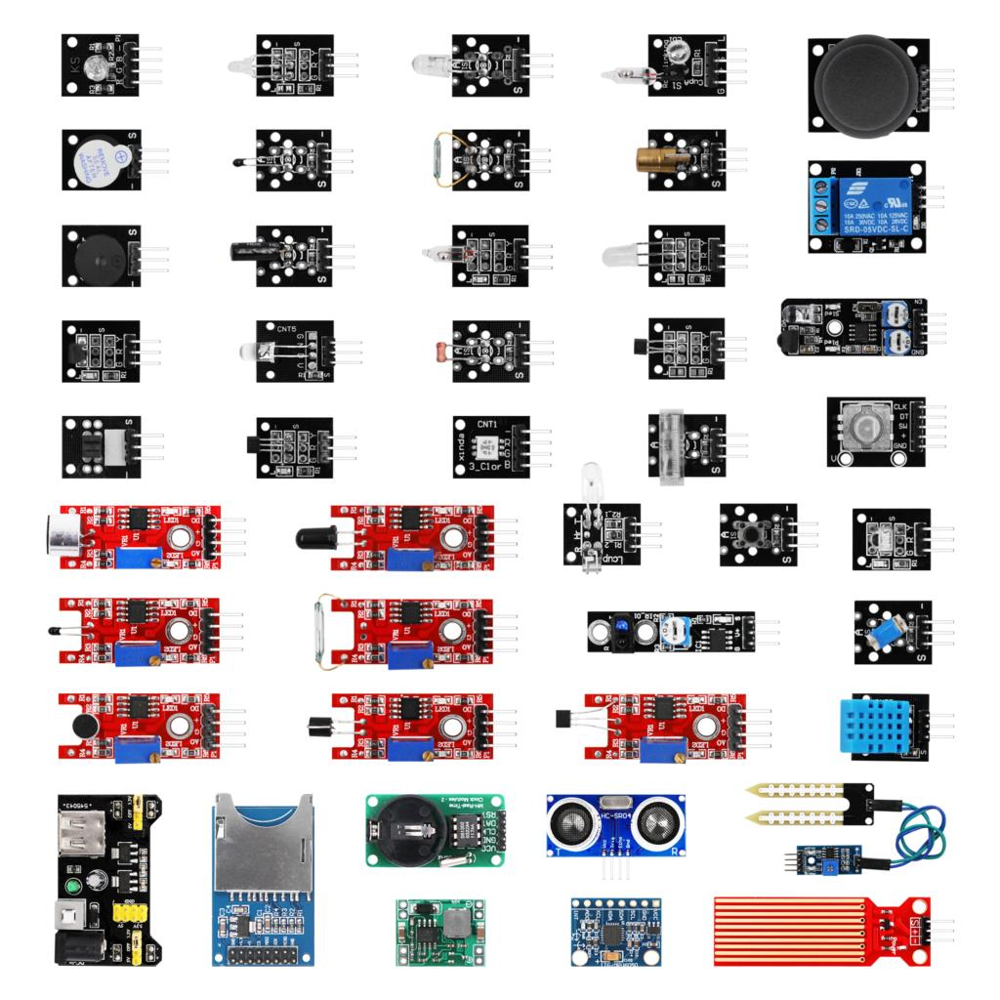

Arduino is how I got into coding. I first learned of Arduino back in High School in the 9th grade. I was always into electronics and technology, but never coding. I never taken any programming classes before and had no prior knowledge. I would take a programming class later that year and at the end of the course, I was comfortable typing code and how it worked. Then I got myself an Arduino kit which came with the Arduino itself and a whole bunch of sensors, LEDs, a remote, an LCD screen, resistors, and a lot more. Since then, I have expanded my knowledge of the Arduino “ecosystem” by exploring the different types of Arduino like the Mega. My favorite add on is the WiFi module with using an app called Blynk. Its super simple to set up and use.